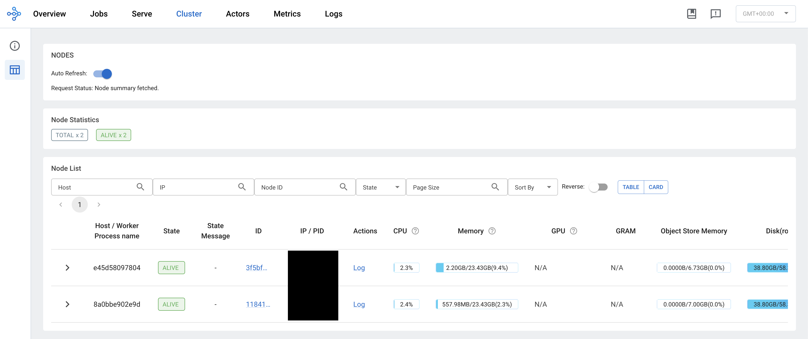
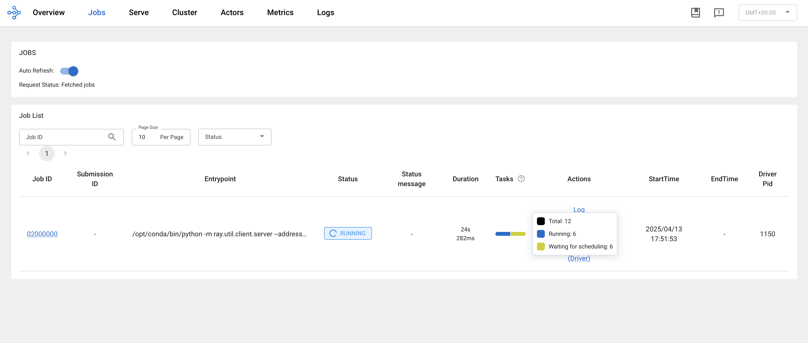

Overview
In the final part of this series, we focus our attention on scaling the model training task. We begin by highlight the steps necessary to configure a Ray cluster. Followed by a refactoring of our training node to leverage the cluster resources. By the end, you should have no problem training tens of thousands of models even on a modest two-node cluster.
Introduction
In the previous post of this series, we configured the components of MLFlow and integrated experiment tracking into our project using Kedro hooks. In this post, we are going to configure a Ray cluster and leverage it to train our models at scale.
Getting Started
The first thing we need to do is add Ray as a dependency to our project.
We need to be very careful here because the version of Ray and Python of the client must match the versions running on the cluster.
Let’s pin a specific version of Ray and Python to our environment.yml file:
# ./environment.yml
name: my_environment_name
channels:
- conda-forge
- defaults
dependencies:
- 'pymc=5.20.1'
- 'graphviz=12.2.1'
- 'numpyro=0.17.0'
- 'python=3.12.7' # Pin Python version
- pip:
- ipython>=8.10
- jupyterlab>=3.0
- kedro-datasets>=3.0
- kedro-viz>=6.7.0
- kedro[jupyter]~=0.19.11
- notebook
- pre-commit~=3.5
- polars~=1.23.0
- pyarrow~=18.1.0
- plotly~=5.24.0
- openpyxl~=3.1.0
- kedro-docker~=0.6.2
- pymc-extras==0.2.3
- mlflow==2.19.0
- psycopg2-binary==2.9.10
- ray[default]==2.42.1 # Pin Ray versionNext, we need to configure our Ray cluster.
Configuring a Ray Cluster
In practice you will want to configure your cluster independently from the current project you are working on because you will want to use this cluster across many projects. However, because this is a blog post, to keep things palatable we are going to configure our cluster coupled to our current project. I will attempt to call out where things differ and what you will need to do to configure your cluster in that situation.
We are going to start by defining a single container image that we will use to set up our head and worker(s) nodes so that all of our cluster components are running with the same environment. Notice that we are using the same environment.yml file that we have defined for our main project. However, in practice different projects may require different dependencies. I find it is best to start with a base environment with standard modules that you/your team typically use inside the image that defines the Ray environment and then when submitting the job to the cluster you can specify additional project specific dependencies that Ray will install in a new environment.
# ./ray.Dockerfile
ARG BASE_IMAGE=python:3.12.7-slim
FROM $BASE_IMAGE AS runtime-environment
# install base utils
RUN apt-get update \
&& apt-get install -y build-essential \
&& apt-get install -y wget \
&& apt-get clean \
&& rm -rf /var/lib/apt/lists/*
# install miniconda
ENV CONDA_DIR /opt/conda
RUN wget --quiet https://repo.anaconda.com/miniconda/Miniconda3-latest-Linux-aarch64.sh -O ~/miniconda.sh && \
/bin/bash ~/miniconda.sh -b -p /opt/conda
# put conda in path
ENV PATH=$CONDA_DIR/bin:$PATH
# install project requirements
COPY environment.yml /tmp/environment.yml
RUN conda env update --name base --file /tmp/environment.yml --pruneIn practice you’ll bring up the head node on one machine and the worker nodes on different machines. Since the cluster components are running on separate machines you will need to configure your network and firewall rules so that these machines can communicate with one another. This may sound daunting at first but after you do it a couple of times it becomes trivial.
In this post, we are going to bring up the head node and one worker node on the same machine using Docker Compose. For our head node we are going to use the default ports of 6379, 8265, and 10001 to listen for other nodes to join the cluster, to host the Ray user interface, and to listen to client calls to submit/run jobs on the cluster respectively. We are also going to specify how much memory our nodes can consume this is a good practice to ensure you don’t end up with Out-Of-Memory errors and crash the machine, especially if in addition to being a part of you cluster the machine is being used for other tasks (not recommended but it happens). To implement our cluster add the following to the docker-compose.yml file that we ended up with in our last post:
# ./docker-compose.yml
services:
ray-head:
build:
dockerfile: ray.Dockerfile
shm_size: 24G
command: >
ray start
--head
--port 6379
--dashboard-host 0.0.0.0
--ray-client-server-port 10001
--block
ports:
- "10001:10001"
- "6379:6379"
- "8265:8265"
deploy:
resources:
limits:
memory: 24G
ray-worker:
build:
dockerfile: ray.Dockerfile
shm_size: 24G
command: >
ray start
--address ray-head:6379
--block
depends_on:
ray-head:
condition: service_started
deploy:
resources:
limits:
memory: 24GNotice that we are specifying the shared memory size shm_size of our Ray services This is necessary because typically Docker will only allocate 64mb to /dev/shm and this shared memory is what Ray will use to store objects during runtime. If you don’t increase this parameter then Ray will store object on disk using /tmp and this will hit performance.
Alright, let’s bring up our services by executing:
docker compose up -dLet’s visit the Ray dashboard running at localhost/8265 and check in on our cluster. You should see something similar to this:

Great! Now that our cluster is up and running it is time to refactor our training node.
Refactor Training
To leverage our running cluster we need to refactor our ML pipeline’s train node. The changes that we will need to make are:
- Initialize a connection to the cluster
- Define a Ray task: This is simply a Python function that is decorated with
@ray.remote - Place our data on the clusters object store: This is so that each worker doesn’t copy the data n-worker times saving on memory utilization
- Submit your task to the cluster
- Asynchronously do stuff with the completed tasks as the rest are still running
# /src/climate_brazil/ML/nodes.py
import ray
from ray.types import ObjectRef
def train(training_dataset: pl.DataFrame, model_config: dict, sampler_config: dict) -> dict:
"""
Train time-series models
---
Params:
training_dataset: Training data
model_config: Model Configurations
sampler_config: MCMC sampler configurations
"""
1 ray.init(
address="ray://ray-head:10001",
ignore_reinit_error=True,
runtime_env={"working_dir": "./src/"},
)
2 data_ref = ray.put(training_dataset.to_pandas())
3 @ray.remote(max_retries=1, num_cpus=4)
def train_model(data_ref: ObjectRef, city: str) -> dict[str, TSModel]:
"""
trains the time series model
---
data_ref: The ray object reference to the data
city: The Brazilian city to fit the model on
"""
data = pl.from_pandas(data_ref)
city_dataset = data.filter(pl.col("city")==city).sort("date")
model = TSModel(model_config=model_config, sampler_config=sampler_config, city=city)
model.fit(
X=city_dataset['date'],
y=city_dataset['temperature'],
normalize_target=True
)
return {f"{city}_model": model}
trained_models = {}
4 trained_models_ref = [
train_model.remote(data_ref=data_ref, city=city)
for city in training_dataset['city'].unique()
]
5 while len(trained_models_ref) > 0:
ready, trained_models_ref = ray.wait(trained_models_ref, num_returns=1)
try:
# Here you can do other stuff while waiting
# for the rest of your models to finish training
model_dict = ray.get(ready) # returns a list of the functions return value
key, model = model_dict[0].popitem()
trained_models[key] = model
except Exception as e:
logger.exception(e)
return trained_models- 1
- Initialize the connection to the cluster
- 2
- Store the data in the cluster’s object store (Notice conversion to Pandas due to no Polars support at the moment)
- 3
- Define your Ray task
- 4
- Call your Ray task over your parallelization unit
- 5
- Perform actions on completed tasks as they are ready
At this point, if we only had a handful of models to fit then this would be fine. However, there is still room for additional gain in performance. We are currently setting aside four cpus to handle just one city. In addition, PyMC has to compile every model and becomes costly the more models you need to fit. In order to get around all of that we can train our models on batches of cities, that way we only compile a model and reserve four cpus for each batch. For the sake of simplicity and brevity, we will leave this as an excercise for the interested reader to implement by refactoring the PyMC model.
In a time-series model, in order to vectorise across batches your time-series time range needs to be fixed. In this case, we would be able to fit 7 cities in one batch and the rest as single city batches.
Execute Pipeline
Before running our pipeline, let’s make sure our image is built with the newly refactored training code.
docker compose build climate-brazilSince all of our other services are already up, we can run our pipeline by executing:
docker compose up -d climate-brazilAs our model is training you can check on the Ray job on the Ray dashboard. You should see something like this:

Awesome! Our models are being fit on a cluster in parallel.
Summary
In this shorter post, we walked through configuring a Ray cluster and highlighted some nuances that you may face in a production setting. After which, we proceeded to refactor our previous training implementation to leverage the running cluster. Additionally, we point out that there remains some performance gain to be had by refactoring the model to handle batched cities.
Conclusion
We’ve come to the end of the “Reproducibility & Scalability” series! If you’ve been following along, thank you! You have come a long way and in doing so you have learned:
How to set up a project that follows software engineering best practices using Kedro
How to leverage custom probabilistic machine learning models while using Kedro and adhering to best practices
How to integrate tracking your experimentation with Kedro by leveraging hooks that handle log parameters, metrics, and artifacts with MLFlow
How to scale your end-to-end machine learning project built with Kedro on a Ray cluster
That is quite a lot!! I hope this series proved to be valuable to you, and I hope to see you in the next one!